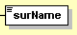
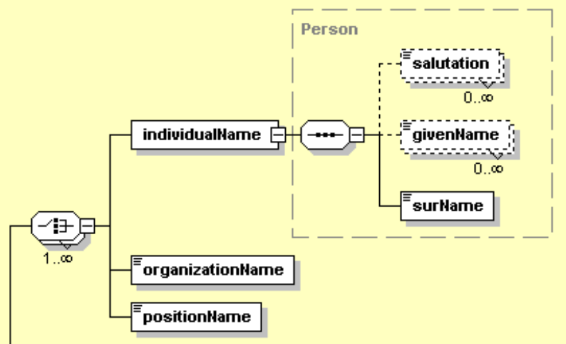

Chapter 3 Explore EML
We use the Ecological Metadata Language (EML) to store structured metadata for all datasets submitted to the Arctic Data Center. EML is written in XML (extensible markup language) and functions for building and editing EML are in the EML R package.
For additional background on EML and principles for metadata creation, check out this paper.
3.2 Understand the EML schema
Another great resource for navigating the EML structure is looking at the schema which defines the structure. The .png files on this page show the schema as a diagram. Additional information on the schema and how different elements (or “slots”) are defined can be found here). Further explanations of the symbology can be found here. The schema is complicated and may take some time to get familiar with before you will be able to fully understand it.
For example, let’s take a look at eml-party. To start off, notice that some elements are in solid boxes, whereas others are in dashed boxes.
{kind=link}
 
A solid box indicates that the element is required if the element above it (to the left in the schema) is used, whereas a dashed box indicates that the element is optional.
Notice also that below the givenName element it says “0..infinity”. This means that the element is unbounded — a single party can have many given names and there is no limit on how many you can add. However, this text does not appear for the surName element — a party can have only one surname.
You will also see icons linking the EML slots together, which indicate the ordering of subsequent slots. These can indicate either a “sequence” or a “choice”. In our example from eml-party, a “choice” icon indicates that either an individualName, organizationName, or positionName is required, but you do not need all three. However, the “sequence” icon tells us that if you use an individualName, you must include the surName as a child element. If you include the optional child elements salutation and givenName, they must be written in the order presented in the schema.

The eml schema sections you may find particularly helpful include eml-party, eml-attribute, and eml-physical. (Click “Download” to zoom in.)
{kind=link}
{kind=link}
For a more detailed description of the EML schema, see the reference section on exploring EML.
3.3 Access specific elements
The eml_get function is a powerful tool for exploring EML (more on that here). It takes any chunk of EML and returns all instances of the element you specify. Note: you’ll have to specify the element of interest exactly, according to the spelling/capitalization conventions used in EML. Here are some examples:
eml <- read_eml(system.file("example-eml.xml", package = "arcticdatautils"))
eml_get(eml, "creator")[[1]]
An object of class "ListOfcreator"
[[1]]
<creator system="uuid">
<individualName>
<givenName>Bryce</givenName>
<surName>Mecum</surName>
</individualName>
<organizationName>National Center for Ecological Analysis and Synthesis</organizationName>
</creator>eml_get(eml, "boundingCoordinates")<boundingCoordinates>
<westBoundingCoordinate>-135</westBoundingCoordinate>
<eastBoundingCoordinate>-134</eastBoundingCoordinate>
<northBoundingCoordinate>59</northBoundingCoordinate>
<southBoundingCoordinate>57</southBoundingCoordinate>
</boundingCoordinates>eml_get(eml, "url")[1] "ecogrid://knb/urn:uuid:89bec5d0-26db-48ac-ae54-e1b4c999c456"You can also use the which_in_eml function from the datamgmt package to get indices within an EML list. Here are some examples:
# Question: Which creators have a surName "Mecum"?
n <- which_in_eml(eml@dataset@creator, "surName", "Mecum")
# Answer: eml@dataset@creator[n]
# Question: Which dataTables have an entityName that begins with "2016"
n <- which_in_eml(eml@dataset@dataTable, "entityName", function(x) {grepl("^2016", x)})
# Answer: eml@dataset@dataTable[n]
# Question: Which attributes in dataTable[[1]] have a numberType "natural"?
n <- which_in_eml(eml@dataset@dataTable[[1]]@attributeList@attribute, "numberType", "natural")
# Answer: eml@dataset@dataTable[[1]]@attributeList@attribute[n]
#' # Question: Which dataTables have at least one attribute with a numberType "natural"?
n <- which_in_eml(eml@dataset@dataTable, "numberType", function(x) {"natural" %in% x})
# Answer: eml@dataset@dataTable[n]